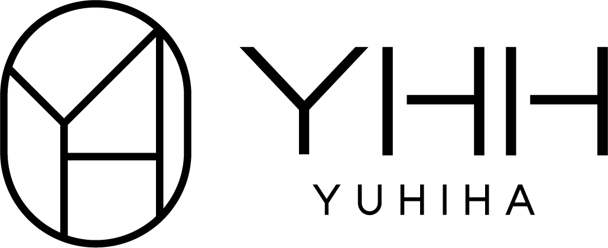
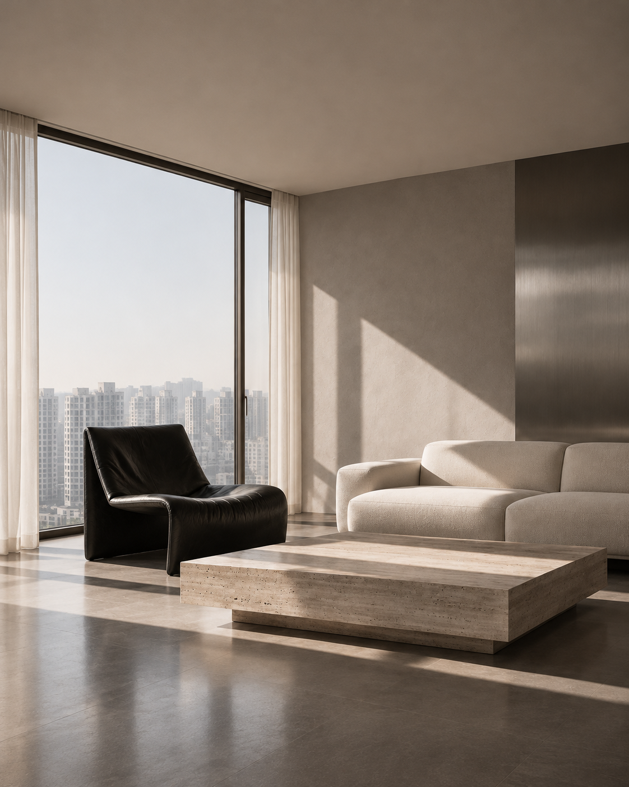
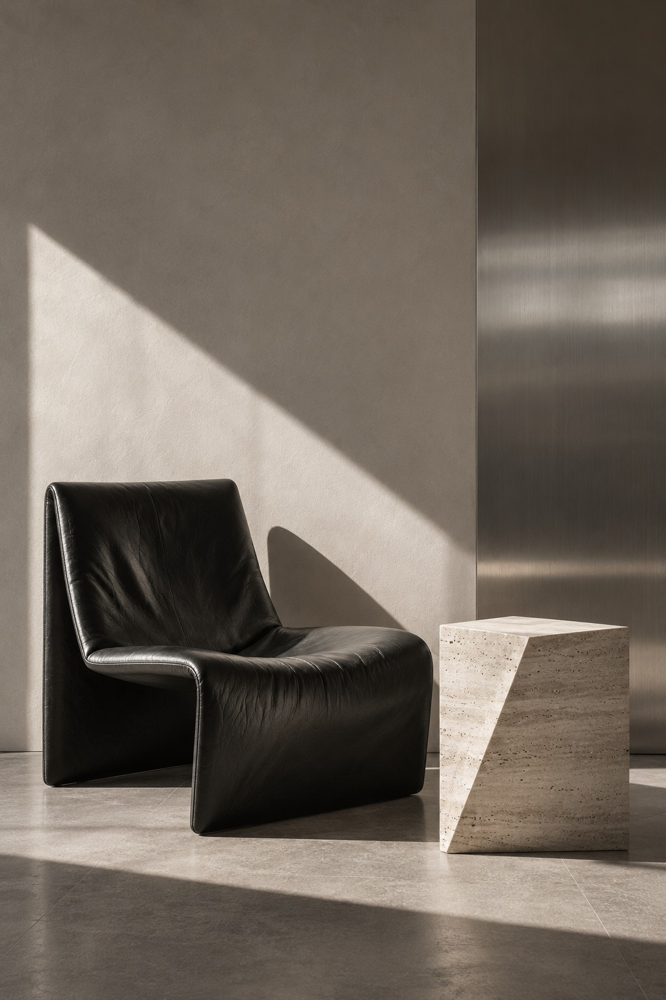

EXPLORE
마감재
아직 자재가 없어요.
실제 제품 사진과 모델명을 등록해 라이브러리를 채워보세요.
YOUR MATERIALS, YOUR POINT OF VIEW.

AN EDIT OF MATERIALS. A POINT OF VIEW.
선택은 명료하게.
공간은 당신답게.
질감, 색, 그리고 당신의 취향.
좋은 재료를 발견하고 공간의 완성으로 이끄는
유희하의 머티리얼 라이브러리입니다.

실제 제품 사진과 모델명을 등록해 라이브러리를 채워보세요.